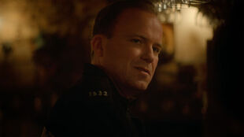
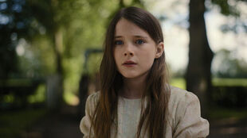
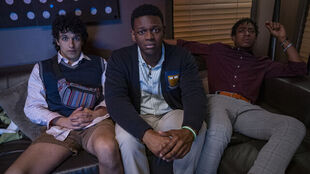
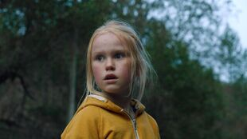
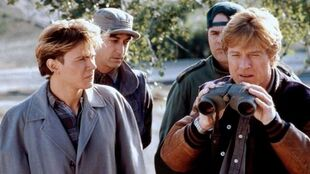

- 
Men’s Man. Multi-faceted star Rory Kinnear on character backstories,
contact lenses and his creative connection with Jessie Buckley
in Alex Garland’s maddening modern nightmare, Men.
- 
Fostering Love. As the award-winning adaptation The Quiet Girl opens
wide in the UK and Ireland, filmmaker Colm Bairéad reflects on Catholicism,
being inspired by Lynne Ramsay, and bringing his beloved language to the
big screen.
- 
Party Plan. Director Carey Williams, writer KD Dávila,
and the stars of Emergency discuss tonal tightropes,
positive masculinity and that final gravity-defying Jenga
move.
-
Pleasure Principle. Pleasure filmmaker Ninja Thyberg on
womanhood, ass destruction, how capital erodes empathy
and the horniest Almodóvar film.
- 
Secret World. The Innocents filmmaker Eskil Vogt discusses
the disturbing magic of childhood, shooting seagulls,
eating scabs and making a horror film in the Scandinavian
daylight.
- 
Cracking the Code. As its thirtieth anniversary sneaks up,
editor-at-large Dominic Corry celebrates an eerily prophetic
early-’90s heist caper that bridges the analog-digital
divide.